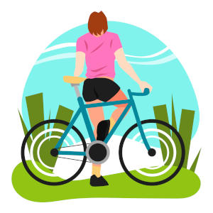

Hobbies são atividades praticadas por prazer durante o tempo livre. É importante lembrarmos que hobbies não são um trabalho: O objetivo da atividade escolhida como passatempo é o relaxamento e o alívio do estresse. Existem alguns tipos de hobbies que podem ser uma atividade em grupo, a prática de alguns esportes coletivos, por exemplo, é um momento em que você pode aproveitar a companhia de outros.
Ter um hobby é ótimo para aprimorar o foco e a dedicação a um projeto. Ao praticar alguma atividade que você realmente goste, é possível deixar a tensão do dia a dia de lado, concentrando-se naquilo que você está fazendo. Além dos benefícios para a sua saúde e o seu bem-estar, o hobby afeta positivamente a sua vida profissional, visto que reduz o estresse e a ansiedade, permitindo que você tenha um ganho de produtividade.
A dança é uma excelente forma de exteriorizar os sentimentos, além de praticar uma atividade física. As aulas permitem que você fortaleça os seus músculos, estimule o seu cérebro e, é claro, se divirta bastante!
Inserir uma atividade física na sua rotina traz diversos benefícios. Escolha um esporte que você goste de praticar e encare a atividade como um hobby, e não como uma obrigação. Ótimos exemplos de esportes para praticar como hobby são: natação, futebol, handebol, basquete, vôlei, corrida e queimada, por exemplo.
O ciclismo é uma atividade realizada com bicicletas para competição, lazer ou exercício físico. Pode ser ao ar livre ou com bicicletas ergométricas. Inclui competições de corrida e manobras.
